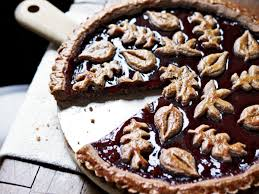
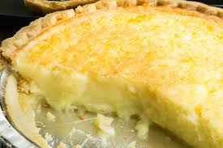

Home of Butter
Storage
Normal butter softens to a spreadable consistency around 15 (60 ), well above refrigerator temperatures. The "butter compartment" found in many refrigerators may be one of the warmer sections inside, but it still leaves butter quite hard.
Usage
-
Melted butter plays an important role in the preparation of sauces, most obviously in French cuisine. Beurre noisette (hazelnut butter) and Beurre noir (black butter) are sauces of melted butter cooked until the milk solids and sugars have turned golden or dark brown; they are often finished with an addition of vinegar or lemon juice.
-
In Poland, the butter lamb (Baranek wielkanocny) is a traditional addition to the Easter Meal for many Polish Catholics. Butter is shaped into a lamb either by hand or in a lamb-shaped mould. Butter is also used to make edible decorations to garnish other dishes.
-
Butter is used for sauting and frying, although its milk solids brown and burn above 150 (250 ), a rather low temperature for most applications. The smoke point of butterfat is around 200 (400 ), so clarified butter or ghee is better suited to frying.
Dishes
This is a list of butter dishes and foods in which butter is used as a primary ingredient or as a significant component of a dish or a food.
- Beurre blanc

- Butter cake

- Linzer torte

- Buttermilk pie

Back to Shopping-List